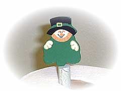
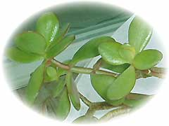
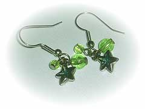

| ..*..*.. 2003年3月16日(日) 雨 & くもり ..*..*.. 毎年、3月17日はグリーンデー。細かい説明はここに書いています。 ニューヨークにいたころは、この時期、春なんてまだまだ先だと思っていたけど、カリフォルニアに来てからは「グリーンデー」という言葉がぴったりな気ががします。 うちの植物も元気に育っています。カリフォルニアは基本的には雨が降らないので、植物は全部スプリンクラーの水で育っています。普段（特に夏の間）は、スプリンクラーのないところには雑草も生えないんだけど、今は雨も多いので、通りには雑草がうっすら緑色に生えています。 多くの人が、職場には緑のものを身に付けて行きます。とくにお祭り騒ぎやお祝いはないけど、緑色のお菓子をくれる人がいたりします。さり気ない感じがいいですね。 私は、ここ数年、このイヤリングをつけているんですよ。 |